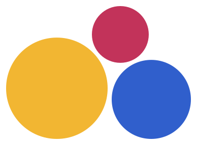

Juego del día
Boliche de vasos
Motricidad15 min3 a 9 años

Necesitas: vasos y calcetines
Así se juega
- 1Arma una pirámide con 6 vasos.
- 2Enrolla dos calcetines para hacer la pelota.
- 3Tiren desde una línea de cinta.
- 4Cuenten cuántos vasos cayeron.
Practica puntería y sumas sin darse cuenta.
¿Lo jugaron?
Guárdalo para la próxima tarde lluviosa y encuentra más juegos con lo que hay en casa en Tribbu.
Mándaselo a la abuelaLink en el perfil